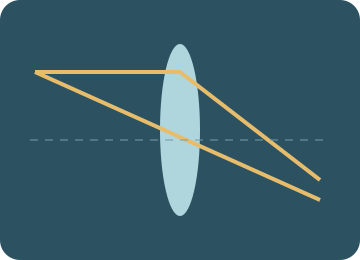

Optics and cameras
Rotate a mirror, trace refracted rays, move lenses and focus a camera on its sensor.

Predict. Investigate. Explain.
Preparing the apparatus…
Choose an investigation, then follow the steps.
Starting stories and prediction · one clock, two objects
Compare a head start in position with a delayed release. B waits at its starting position until its start time.
Record and compare your results.
Up to 10 trials per investigation, kept while this page is open. Reloading clears the notebook. These practical notes and lesson checks are not sent to the teacher.
Check your understanding
Connect the model to the physics
Reflection, visibility and mirrors
Angles of incidence and reflection are measured from the normal and are equal. A plane mirror forms an upright virtual image the same distance behind as the object is in front. A ray reaches an eye only if its complete path is clear.
Worked example. Moving a card can block one ray while leaving another clear. A ball can still be visible around the card if another ball → mirror → eye path is unobstructed.
Refraction and Snell’s law
n₁ sin i = n₂ sin r. Entering a higher refractive index bends a non-normal ray towards the normal; its speed and wavelength decrease while frequency stays fixed.
Worked example. From air into glass (n = 1.5) at i = 30°, r = asin(sin30°/1.5) ≈ 19.5°.
Total internal reflection
TIR requires travel from a higher to a lower refractive index and incidence above the critical angle. At the critical angle the refracted ray lies along the boundary. sin c = n₂/n₁.
Worked example. Glass (1.5) to air has c ≈ 41.8°. At 50°, no transmitted ray emerges in this ideal model.
Lens equations and signs
Use 1/f = 1/u + 1/v, with u positive for the real object here, f positive for a converging lens and negative for a diverging lens. Positive v indicates a real image; negative v a virtual image. Magnification m = −v/u. The drawing is a thin-lens, paraxial model.
Worked example. For f = +10 cm and u = 30 cm, v = +15 cm and m = −0.5: real, inverted and half-height. A diverging lens with f = −10 cm and u = 30 cm gives v = −7.5 cm.
Cameras and focusing
A converging lens forms a real inverted image on a sensor. Changing object distance changes the required lens-to-sensor distance. Aperture controls light admitted and affects depth of field; it does not change focal length in this model.
Worked example. For a 50 mm lens and an object 1000 mm away, v ≈ 52.6 mm. Moving the sensor to this position gives focus. The sensor blur is a qualitative cue, not a photographic optical calculation.
Classroom connections
Use the apparatus model to test a prediction, record two trials with one changed condition, then explain the difference with an equation or diagram. Use your teacher’s worksheets for assessed tasks. The revision simulator below offers practice, mixed questions and a Test yourself mode.
Try it. Solve it. Play again.
Ray Detective and Focus Finder: move cards, build a model and use feedback to work out the next step.
Ready to test your understanding?
Choose from 60 questions on optics and cameras. Select question areas and levels, practise with explanations or take a Test yourself quiz, then retry mistakes.